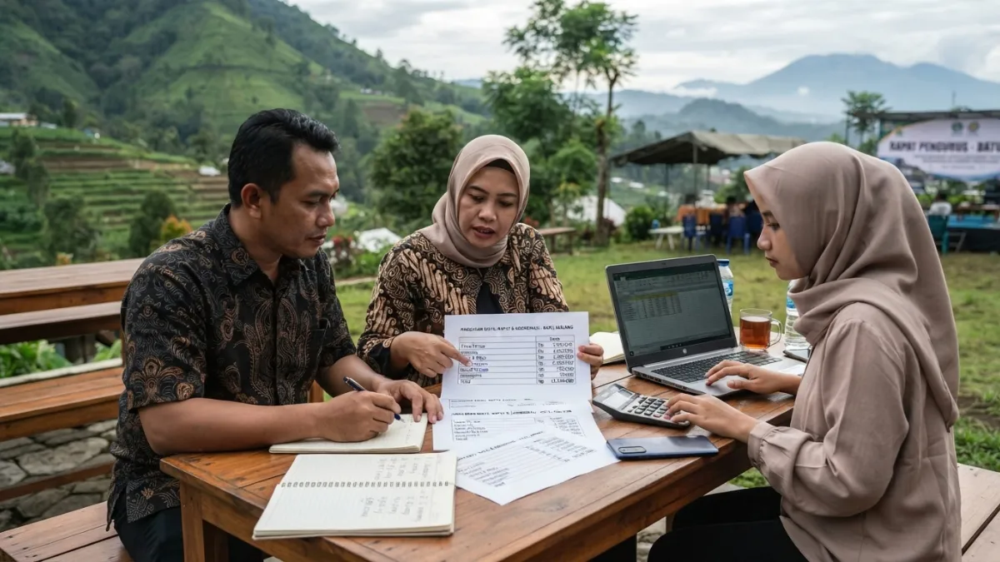
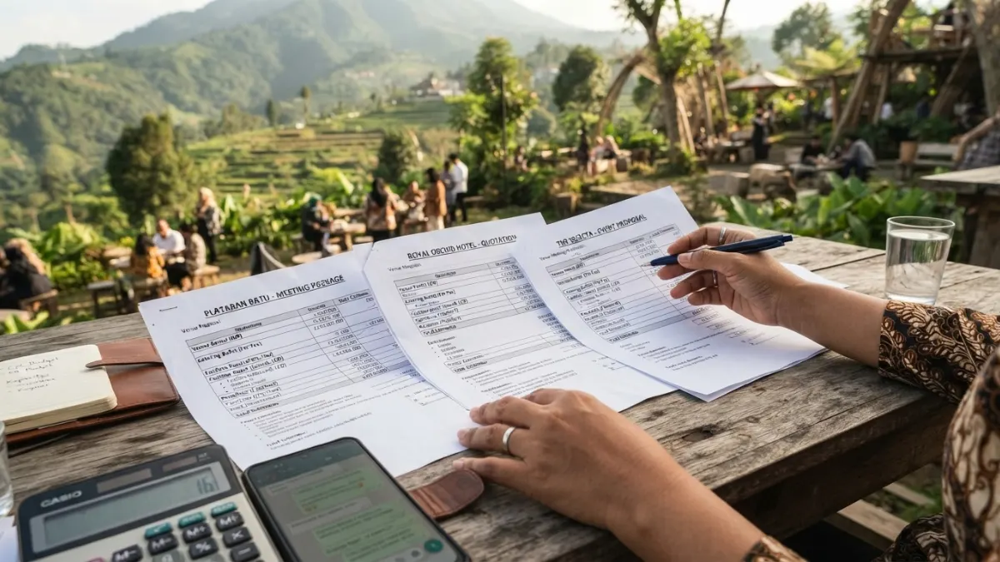

Grafik atau ilustrasi komponen biaya meeting outdoor yang mencakup venue, konsumsi, dan peralatan.Biaya meeting outdoor di Batu bergantung pada jenis venue, jumlah peserta, durasi, konsumsi, fasilitas tambahan, dan musim kunjungan, sehingga tarif dapat sangat bervariasi.
- Komponen Apa Saja yang Membentuk Biaya Meeting Outdoor?
- Apa yang Membuat Tarif Venue Berbeda-beda?
- Bagaimana Menghitung Anggaran per Peserta?
- Apa Perbedaan Paket All-in dan Paket Terpisah?
- Bagaimana Cara Menekan Biaya Tanpa Menurunkan Kualitas?
- Biaya Tersembunyi Apa yang Sering Terlewat?
- Bagaimana Membandingkan Penawaran dari Beberapa Venue?
- FAQ
Komponen Apa Saja yang Membentuk Biaya Meeting Outdoor?
Komponen biaya meeting outdoor umumnya terdiri dari sewa venue, konsumsi, peralatan, dekorasi, transportasi, tenaga pendukung, dan biaya tambahan seperti listrik atau kebersihan.
Sewa venue adalah komponen utama dan dapat dihitung per hari, per jam, atau per paket. Konsumsi mencakup makan berat, camilan, dan minuman, dan sering menjadi komponen terbesar berikutnya.
Peralatan meliputi sound system, proyektor, layar, mikrofon, dan genset bila diperlukan.
Dekorasi dan penataan mencakup kursi, meja, tenda, dan penanda arah. Transportasi meliputi sewa bus atau kendaraan, bahan bakar, dan biaya parkir.
Tenaga pendukung mencakup pemandu acara, teknisi, dan petugas keamanan. Bila acara menginap, biaya penginapan menjadi komponen tersendiri.
Pisahkan seluruh komponen ini dalam lembar anggaran agar setiap pos dapat dipantau, dan sediakan pos cadangan untuk kebutuhan tak terduga.
Apa yang Membuat Tarif Venue Berbeda-beda?
Tarif venue di Batu berbeda karena jenis fasilitas, lokasi, hari penggunaan, tingkat permintaan musiman, serta paket layanan yang sudah termasuk atau belum termasuk dalam penawaran.
Venue dengan fasilitas lengkap seperti ruang cadangan tertutup, kamar, dan dapur umumnya memiliki struktur biaya berbeda dari lahan terbuka sederhana.
Lokasi yang lebih mudah dijangkau atau berpemandangan menonjol juga dapat memengaruhi tarif. Hari kerja dan akhir pekan sering diperlakukan berbeda.
Permintaan musiman ikut berperan. Menurut data Disparta Kota Batu yang dilaporkan Malang Post, Kota Batu kehilangan sekitar 1,3 juta wisatawan pada 2025 dibanding 2024, dari 11.005.189 menjadi 9.794.603 kunjungan.
Data ini tidak otomatis berarti tarif turun, tetapi menunjukkan tingkat kunjungan berubah dari tahun ke tahun, sehingga panitia perlu menanyakan penawaran terbaru dan tidak bergantung pada tarif lama.
Bagaimana Menghitung Anggaran per Peserta?
Anggaran per peserta dihitung dengan menjumlahkan seluruh komponen biaya acara, lalu membaginya dengan jumlah peserta, dan menambahkan cadangan darurat agar anggaran tetap aman.
Rumus sederhananya: total biaya venue, konsumsi, peralatan, dekorasi, transportasi, tenaga pendukung, dan biaya lain dijumlahkan, lalu dibagi jumlah peserta.
Setelah itu tambahkan cadangan sebagai persentase yang disepakati internal, misalnya untuk perubahan jumlah peserta atau biaya tambahan.
Pisahkan biaya tetap dan biaya variabel. Biaya tetap, seperti sewa area, tidak berubah menurut jumlah peserta.
Biaya variabel, seperti konsumsi dan suvenir, naik seiring peserta. Pemisahan ini membantu panitia menghitung dampak penambahan atau pengurangan peserta.
Catat asumsi anggaran, misalnya jumlah peserta minimal dan maksimal, agar evaluasi setelah acara lebih objektif.
Apa Perbedaan Paket All-in dan Paket Terpisah?
Paket all-in menggabungkan venue, konsumsi, dan fasilitas dalam satu harga, sedangkan paket terpisah memisahkan setiap komponen sehingga kontrol biaya lebih rinci tetapi koordinasi lebih banyak.
Paket all-in cocok untuk panitia yang ingin praktis. Semua kebutuhan diurus satu pihak, sehingga komunikasi lebih sederhana.
Kelemahannya, rincian biaya per item kadang kurang transparan dan pilihan menu atau fasilitas bisa terbatas.
Paket terpisah cocok untuk panitia yang punya vendor konsumsi atau peralatan sendiri. Kontrol atas kualitas dan harga tiap komponen lebih besar, tetapi panitia harus berkoordinasi dengan beberapa pihak.
Sebelum memilih, tanyakan apakah venue mengizinkan vendor luar dan apakah ada biaya tambahan untuk itu. Hitung total biaya akhir kedua opsi dengan rincian yang sama sebelum memutuskan.
Bagaimana Cara Menekan Biaya Tanpa Menurunkan Kualitas?
Biaya dapat ditekan dengan memilih hari kerja, menyesuaikan durasi, menegosiasikan paket, mengurangi dekorasi berlebih, dan membandingkan minimal tiga penawaran dari venue berbeda.
Hari kerja umumnya lebih fleksibel dibanding akhir pekan, dan penawaran sering lebih terbuka untuk dinegosiasikan.
Sesuaikan durasi dengan kebutuhan: acara setengah hari dapat menghemat konsumsi dan sewa dibanding satu hari penuh.
Negosiasikan paket dengan memberi gambaran jumlah peserta dan kemungkinan penggunaan berulang.
Kurangi dekorasi yang tidak berpengaruh pada tujuan acara. Manfaatkan peralatan yang sudah dimiliki kantor.
Hindari memangkas pos keselamatan, kebersihan, dan konsumsi, karena hal ini langsung memengaruhi kenyamanan peserta.
Penghematan yang baik menyasar pos yang tidak memengaruhi tujuan acara, bukan kualitas layanan inti.

Ilustrasi Bandingkan penawaran secara rinci agar tidak ada biaya tambahan yang terlewat.Biaya Tersembunyi Apa yang Sering Terlewat?
Biaya tersembunyi yang sering terlewat meliputi denda kelebihan jam, biaya kebersihan, tarif listrik tambahan, parkir bus, biaya membawa konsumsi luar, dan pajak layanan.
Denda kelebihan jam muncul ketika acara melewati batas waktu yang disepakati.
Biaya kebersihan kadang dikenakan terpisah, terutama untuk acara dengan makanan berat atau kegiatan yang meninggalkan sampah banyak.
Listrik tambahan dapat dikenakan bila peralatan melebihi kapasitas daya standar.
Parkir bus atau kendaraan besar terkadang memiliki tarif tersendiri. Bila panitia membawa konsumsi dari luar, sebagian venue mengenakan biaya tertentu.
Pajak dan biaya layanan juga bisa belum tercantum dalam harga awal. Cara terbaik menghindari kejutan adalah meminta penawaran tertulis yang mencantumkan seluruh item, lalu bertanya secara eksplisit mengenai biaya lain di luar daftar tersebut.
Bagaimana Membandingkan Penawaran dari Beberapa Venue?
Bandingkan penawaran dengan format yang sama: daftar item yang termasuk, syarat pembayaran, kebijakan pembatalan, dan batas waktu, lalu hitung total biaya akhir setiap venue.
Buat tabel perbandingan internal dengan kolom yang seragam untuk setiap venue: harga dasar, item yang termasuk, item yang tidak termasuk, biaya tambahan, uang muka, batas pelunasan, dan kebijakan pembatalan. Format seragam membuat perbedaan nyata mudah terlihat.
Jangan hanya melihat harga termurah. Penawaran murah dapat menyembunyikan biaya tambahan, sedangkan penawaran lebih mahal mungkin sudah mencakup fasilitas yang di tempat lain harus dibayar terpisah.
Nilai juga faktor non-harga seperti reputasi, kelengkapan fasilitas, dan kemudahan akses. Untuk kriteria pemilihan venue, baca cara memilih tempat meeting outdoor di Batu yang tepat, dan untuk gambaran menyeluruh, buka panduan tempat meeting outdoor Batu Malang.
FAQ